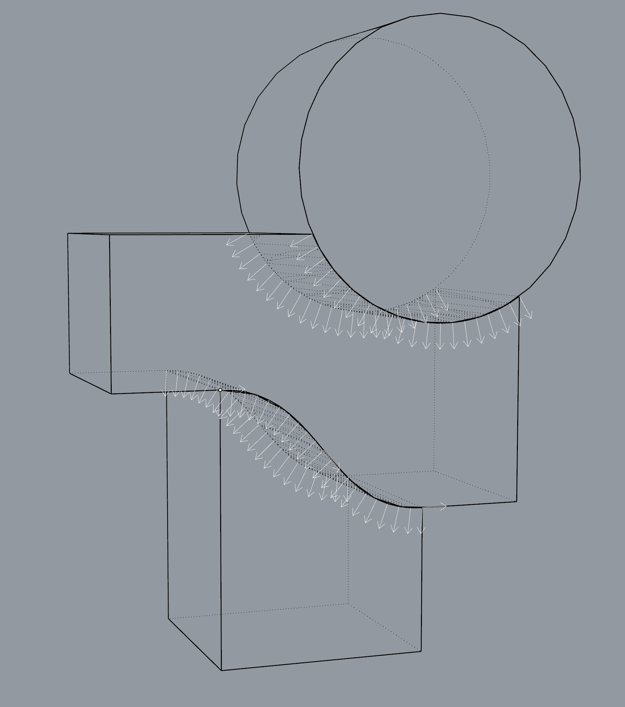
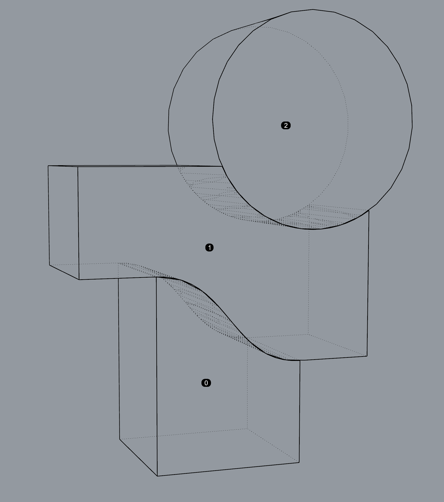

Tutorial
Export geometry from CAD software (Rhino)
Rhino Installation
Please make sure install compas_cra first, see Installation.
compas_cra is developed independent of the functionality of CAD software.
However, CAD software is still useful to create complicated geometrical objects.
For a more detailed information on how to install COMPAS and its packages for Rhino,
please refer to Working in Rhino page of the COMPAS documentation.
In order to install compas_cra for Rhino, do
$ python -m compas_rhino.uninstall
$ python -m compas_rhino.install
$ python -m compas_rhino.install -p compas_cra
Every time a new file is opened in Rhino, be sure to restart Rhino or reset the Python Script Engine before running scripts.
Export mesh blocks as Assembly json file
Use this script at scripts/mesh_to_assembly_json.py to select mesh blocks and export to assembly data structure and store it as json file.
#!/usr/bin/env python
# -*- coding: utf-8 -*-
"""
This is the script to add assembly without interfaces from rhino meshes
"""
__author__ = "Gene Ting-Chun Kao"
__email__ = "kao@arch.ethz.ch"
if __name__ == '__main__':
import os
import compas
import rhinoscriptsyntax as rs
from compas_rhino import select_meshes
from compas_cra.datastructures import CRA_Assembly
HERE = os.path.abspath(os.path.dirname(__file__))
DATA = os.path.abspath(os.path.join(HERE, "../data/"))
guid = select_meshes()
assembly = CRA_Assembly()
assembly.add_blocks_from_rhinomeshes(guid)
filename = rs.GetString("file name (xxx.json):")
file_o = os.path.join(DATA + '/' + filename)
compas.json_dump(assembly, file_o)
print("file save to: ", file_o)
Note: The selection sequence is important because it represents the node indices.
Export mesh blocks and interfaces as Assembly json file
Currently, we do not implement automatic interface detection algorithm for blocks with curve/free-form interfaces, so they have to be discretised manually as planar faces or triangles.
Use this script at scripts/mesh_to_assembly_interfaces_json.py to select mesh blocks with interfaces and export to assembly data structure and store it as json file.
#!/usr/bin/env python
# -*- coding: utf-8 -*-
"""
This is the script to add assembly and interfaces from rhino meshes
"""
__author__ = "Gene Ting-Chun Kao"
__email__ = "kao@arch.ethz.ch"
if __name__ == '__main__':
import os
import compas
import rhinoscriptsyntax as rs
from compas_rhino.geometry import RhinoMesh
from compas_cra.datastructures import CRA_Assembly
HERE = os.path.abspath(os.path.dirname(__file__))
DATA = os.path.abspath(os.path.join(HERE, "../data/"))
guid = rs.GetObjects("select blocks",
preselect=False, select=False, group=False,
filter=rs.filter.mesh)
assembly = CRA_Assembly()
assembly.add_blocks_from_rhinomeshes(guids=guid)
node_labels = []
for node in assembly.nodes():
block = assembly.graph.node_attribute(node, "block")
c = block.centroid()
node_labels.append(rs.AddTextDot(node, c))
IS_FINISHED = False
while not IS_FINISHED:
interface_guids = rs.GetObjects("select interfaces",
preselect=False, select=False,
group=False, filter=rs.filter.mesh)
interfaces = []
for interface_guid in interface_guids:
mesh = RhinoMesh.from_guid(interface_guid)
interfaces.append(mesh.to_compas())
edge_a = rs.GetInteger("assign interface from")
edge_b = rs.GetInteger("assign interface to")
assembly.add_interfaces_from_meshes(interfaces, edge_a, edge_b)
IS_FINISHED = rs.GetBoolean("Continue select interface?",
("Continue", "Continue", "Stop"),
(False))[0]
rs.DeleteObjects(node_labels)
filename = rs.GetString("file name (xxx.json):")
file_o = os.path.join(DATA + '/' + filename)
compas.json_dump(assembly, file_o)
print("file save to: ", file_o)
Note:
The selection sequence is important because it represents the node indices.
The interface normal directions are important, it must point from assign interface from to assign interface to. For example, in Figure 1, assign interface from: 1 and assign interface to: 0 for the interface from 1 to 0.
|  |  |
{kind=link}
{kind=link}
More Rhino files and precomputed .json files are located at data folder.
Using CRA Solvers
compas_cra provide three solvers:
RBE Solve:
compas_cra.equilibrium.rbe_solve.CRA Solve:
compas_cra.equilibrium.cra_solve.CRA Penalty Solve:
compas_cra.equilibrium.cra_penalty_solve.
To see more how to construct assembly and solve equilibrium, please check Examples.